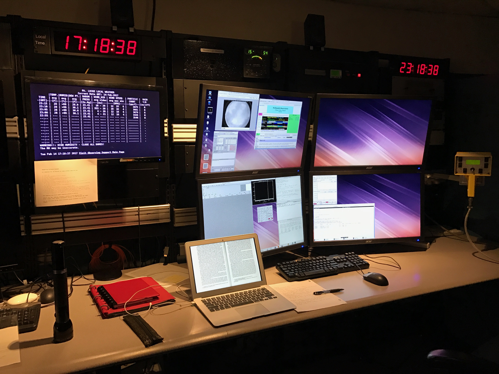
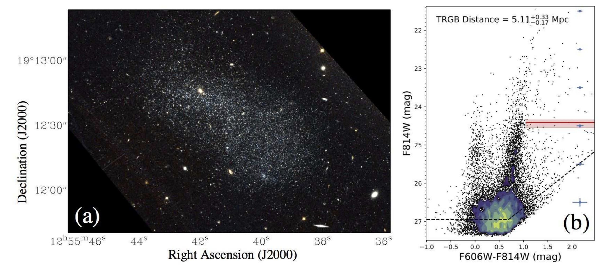
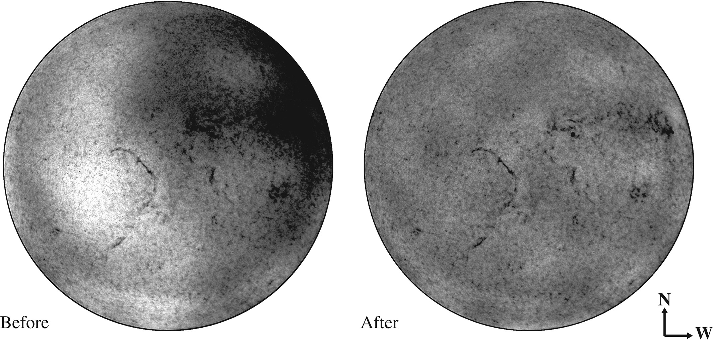

About Me

Bio: Zili was born in Beijing, China and graduated from the University of Texas at Austin in 2019 with two majors, physics and astronomy.
She completed an honors thesis titled “Falsifiability of the Multiverse Theory” under the mentorship of Prof. Volker Bromm.
At UT, she studied the star formation history of dwarf galaxies with her research advisor Dr. Kristen McQuinn. Zili continued to study galaxies at Yale,
now focusing on the enigmatic "Dark-matter-free" galaxies NGC1052-DF2 and DF4. Particularly, she
hopes to find clues of how these galaxies formed and evolved from their unusual population of globular clusters.
When she is not studying or stargazing, she spends her time skiing, baking, visiting museums, and reading about philosophy.
Publications:
ADS link
Research

Ongoing Project:
Globular Cluster luminosity function in the "Dark Matter Free" galaxies NGC1052 DF2 and DF4.
I am working with Prof. Pieter van Dokkum to identify and study the Globular Cluster (GC) population in NGC1052 DF2 and DF4.
These galaxies have been thought to contain little or no dark matter based on GC kinematics, and the properties of the GCs may reveal
the formation scenario of these systems.
Using the LRIS spectrograph on Keck, we obtained complete spectroscopic identification for GC candidates brighter than 23 mag. New, deep HST
images (10 orbits for DF4 and upcoming 40 orbits for DF2 in Cycle 27) allow photometric selection of fainter GCs. We are working on
constructing the luminosity function for GCs in both systems and obtaining spectra for stellar population analysis.
Past Projects:

1. Discovery of a recent starburst in the dwarf galaxy KDG 215.
Cannon, J. M., Shen, Z., McQuinn, K. B. W., et al. 2018, ApJ, 864, L14
Dwarf galaxies like KDG 215 probe the low-mass end of galaxy formation.
Although KDG 215 is unusually gas-rich, it is currently inactive in star formation.
To investigate its evolution, we used HST archival images to construct color-magnitude diagrams (CMDs).
I restructured and streamlined the data analysis process. I also managed the extensive GitHub repository for our CMD matching tool.
With the Wrangler supercomputer at the Texas Advanced Computing Center, I reconstructed the star formation history of KDG 215 by
matching the observed CMD to synthetic CMDs from stellar evolution models.
The result of the best fit revealed a surprisingly unusual star formation history for this galaxy.
While most galaxies form stars early on and continue to form stars, KDG 215 only formed around 40% of its total stellar mass until one billion years ago.
Then, it experienced an active episode of star formation followed by a gradual decline to its current inactive state.
We discovered an extreme case of stellar feedback suppressing star formation.

2. Solar chromosphere data calibration pipeline.
Shen, Z., Diercke, A., Denker, C.. 2018, Astron. Nachr., 339, 661
In the summer of 2018, I developed a method to remove instrumental artifacts from solar images and incorporated it into the reduction pipeline.
I joined the optical solar physics group at the Leibniz Institute of Astrophysics Potsdam, under Prof. Carsten Denker.
We studied the migration of solar filaments which revealed the cyclic variation of the magnetic field.
Measuring the kinematics of solar filaments required accurate full-disk Doppler maps.
In our dataset, uneven filter transmission left a systematic yin-yang pattern and significantly impaired velocity calculation.
I developed a method using Zernike polynomials to characterize and remove the image artifacts. After removing the artifacts,
I calibrated the obtained Doppler maps with high-resolution spectrograph data.
The pipeline was implemented in IDL and optimized to re-process archival data taken in the past six years.
The pipeline has been added to the sTools solar data reduction pipeline
for all future data processing.
This new method can be applied generally to calibrate full-disk solar images, and it will facilitate studies of solar filament migration.
Contact
Email: zili.shen@yale.edu
Address: 46 Hillhouse Ave, New Haven, CT 06511
 OrcID: 0000-0002-5120-1684
OrcID: 0000-0002-5120-1684